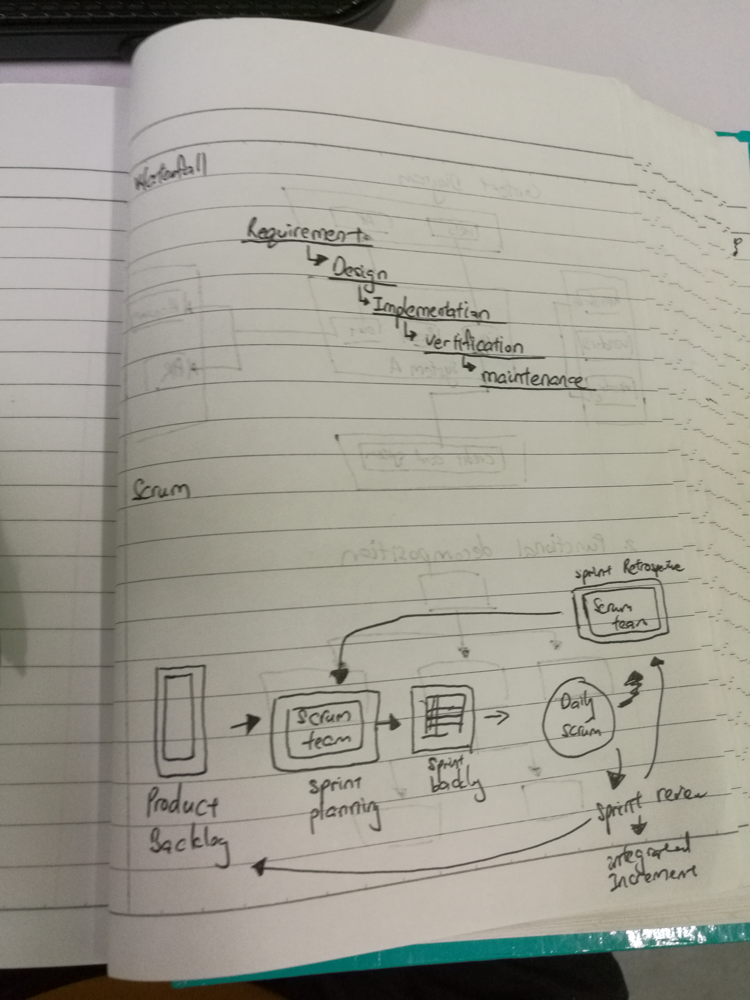

There are two type of common development menthologies used by modern project manager. First is waterfall or traditional, and also can be called linear-sequential life cycle model.The advantage of this type of process is less of process and easy to understand and use. There has six process in the waterfall, requirement gathering and analysis, system design, implementation, testin, development of system and maintenence. Normally for smaller project where requirement are very well understood. But it also have disadvantage, first is they want to complete the step before go to next step, and when a step appear problem will affect after process, and it is difficult to midway modify. And this type of menthology want to sue a lot of time to complete. Second is Scrum. Scrum consists of three roles that is product owner, scrum master and the team. Product owner is the people who represents company. The scrum master is the project manager who manage and control the process. The team is peoles who will excute the task. The advantage of scrum is it can change the the scope and direnction or modify at anytime, for work effeciency, they want to complete a process in fixedtime, so that can save many to to complete the rewuirement. Scrum also has disadvantage that is the scrum master difficult want to plan, structure and organize and the team will feel strees when want to complete the task in within a limited time.
